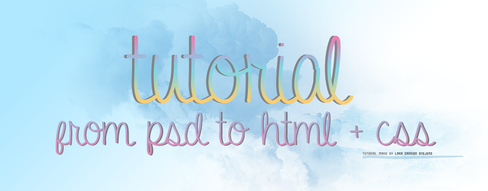


Antes de empezar, es necesario saber algunos conceptos básicos sobre Photoshop.
En la siguiente imagen se muestra el entorno de trabajo de Photoshop.
Nos centraremos en las partes resaltadas en rojo, que son las que utilizaremos a lo largo del tutorial.
Según el elemento que hayamos seleccionado en la barra de herramientas, tendremos unas propiedades u otras en esta barra, que sirve para configurar las propiedades del elemento seleccionado en ese momento.
Scroll
En la siguiente imagen se muestra el entorno de trabajo de Photoshop.
Nos centraremos en las partes resaltadas en rojo, que son las que utilizaremos a lo largo del tutorial.
Menú superior
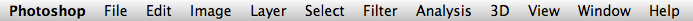
- File: Contiene las funciones necesarias para crear un nuevo documento, guardarlo, exportarlo, imprimirlo, etc.
- Edit: En esta sección se encuentran los comandos de copiar, pegar, pegado especial,deshacer...
- Image: Contiene los comandos relacionados con la imagen, tales como modos de color (RGB, escala de grises...), ajustes a nivel de capa, tamaño de la imagen, tamaño del lienzo...
- Layer: Reúne todos los comandos de capa, tales como nueva capa, duplicar capa, capas de ajuste, acoplar capas...
- Select: Contiene funciones de selección
- Filter: Contiene filtros aplicables a nuestro lienzo
- Analysis: Contiene escalas y reglas aplicables a nuestro trabajo
- 3D: Contiene comandos para trabajar con imágenes 3D
- View: Contiene funciones de zoom, reglas, guías, etc
- Window: En esta sección podemos seleccionar las ventanas que queremos que aparezcan en nuestro entorno de trabajo
- Help: ayuda acerca del programa
Barra de herramientas
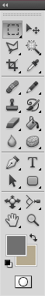
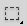 Rectangular / Elliptical Marquee Tool (M): Herramienta de selección rectangular / elíptica
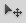 Move Tool (V): Herramienta mover
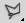 Polygonal Lasso Tool (L): Lazo poligonal (selección)
Magic Wand Tool (W): Varita mágica (selección)
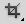 Slice Tool (C): Herramienta de corte
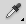 Eyedropper Tool (I): Gotero (seleccionar color)
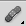 Healing Brush Tool (J): Tirita (adopta un patrón determinado)
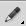 Pencil Tool / Brush Tool (B): Herramienta de Lápiz / Pincel
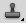 Clone Stamp Tool (S): Herramienta clonar
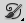 Art History Brush Tool (Y)
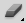 Eraser Tool (E): Borrador
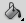 Paint Bucket Tool (G): Cubo (relleno color sólido / patrón)
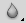 Blur Tool: Herramienta de desenfoque
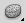 Sponge / Burn / Dodge Tool (O): Herramientas de desaturación y oscurecimiento
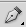 Pen Tool (P): Herramienta de pluma
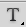 Horizontal Type Tool (T): Herramienta de texto
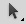 Path Selection Tool (A): Puntero normal (ninguna acción)
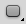 Line / Rectangle / Ellipse /Polygon Tool (U): Figuras geométricas
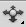 Object Slide Tool (K): Manejo de objetos 3D
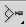 Camera Zoom Tool (N): Rotación de la cámara 3D
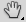 Hand Tool (H): Herramienta de mano
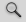 Zoom Tool (Z): Herramienta para zoom
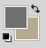 Set foreground / background color: Seleccionar color actual / de fondo
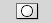 Edit in Quick Mask Mode (Q): Herramienta de máscara
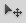 Move Tool (V): Herramienta mover
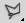 Polygonal Lasso Tool (L): Lazo poligonal (selección)
Magic Wand Tool (W): Varita mágica (selección)
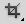 Slice Tool (C): Herramienta de corte
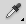 Eyedropper Tool (I): Gotero (seleccionar color)
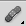 Healing Brush Tool (J): Tirita (adopta un patrón determinado)
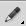 Pencil Tool / Brush Tool (B): Herramienta de Lápiz / Pincel
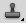 Clone Stamp Tool (S): Herramienta clonar
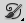 Art History Brush Tool (Y)
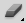 Eraser Tool (E): Borrador
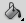 Paint Bucket Tool (G): Cubo (relleno color sólido / patrón)
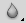 Blur Tool: Herramienta de desenfoque
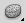 Sponge / Burn / Dodge Tool (O): Herramientas de desaturación y oscurecimiento
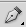 Pen Tool (P): Herramienta de pluma
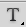 Horizontal Type Tool (T): Herramienta de texto
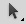 Path Selection Tool (A): Puntero normal (ninguna acción)
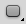 Line / Rectangle / Ellipse /Polygon Tool (U): Figuras geométricas
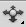 Object Slide Tool (K): Manejo de objetos 3D
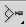 Camera Zoom Tool (N): Rotación de la cámara 3D
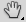 Hand Tool (H): Herramienta de mano
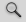 Zoom Tool (Z): Herramienta para zoom
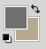 Set foreground / background color: Seleccionar color actual / de fondo
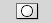 Edit in Quick Mask Mode (Q): Herramienta de máscara
Ajustes de elemento seleccionado
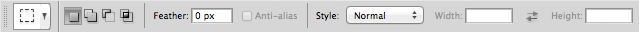
Según el elemento que hayamos seleccionado en la barra de herramientas, tendremos unas propiedades u otras en esta barra, que sirve para configurar las propiedades del elemento seleccionado en ese momento.
Capas
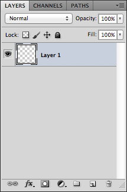
El concepto de capa es algo muy importante que debe estar muy claro antes de realizar cualquier trabajo en Photoshop.
Las capas son la forma en que Photoshop estructura el trabajo. En otras palabras, las capas permiten que podamos tratar cada elemento por separado y aplicarle a cada uno unas características especiales, sin necesidad de tratar el trabajo como un todo en el que no se distinguen elementos.
De esta manera podremos mover y caracterizar elementos más fácilmente y obtener un trabajo más dinámico.
En la imagen podemos ver la ventana de capas. Desde aquí podremos caracterizar cada una de las capas gracias a lasdiferentes funciones incorporadas, crear nuevas capas, duplicar o eliminar las ya existentes y cambiar los modos de capa.
Las capas son la forma en que Photoshop estructura el trabajo. En otras palabras, las capas permiten que podamos tratar cada elemento por separado y aplicarle a cada uno unas características especiales, sin necesidad de tratar el trabajo como un todo en el que no se distinguen elementos.
De esta manera podremos mover y caracterizar elementos más fácilmente y obtener un trabajo más dinámico.
En la imagen podemos ver la ventana de capas. Desde aquí podremos caracterizar cada una de las capas gracias a lasdiferentes funciones incorporadas, crear nuevas capas, duplicar o eliminar las ya existentes y cambiar los modos de capa.
Scroll

{kind=link}